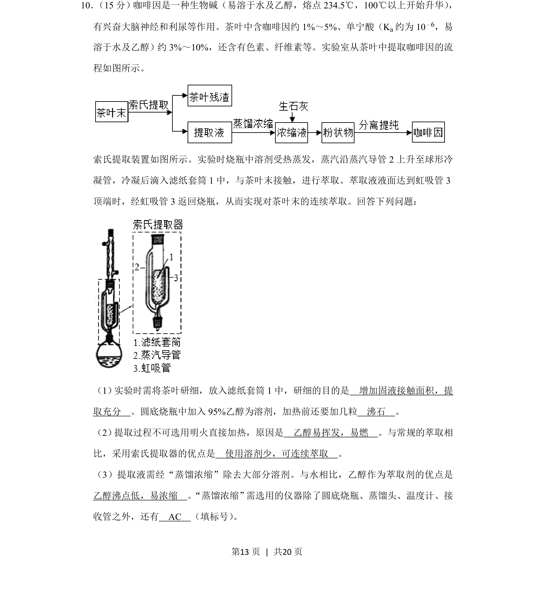
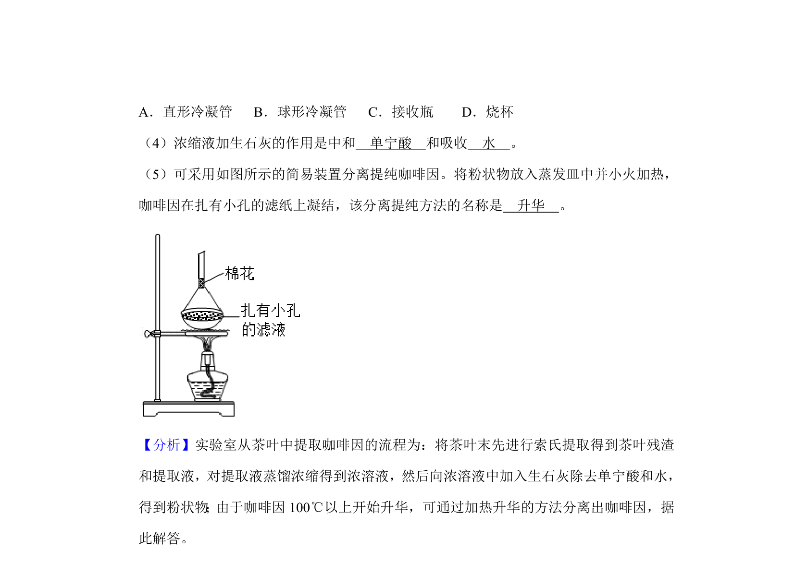
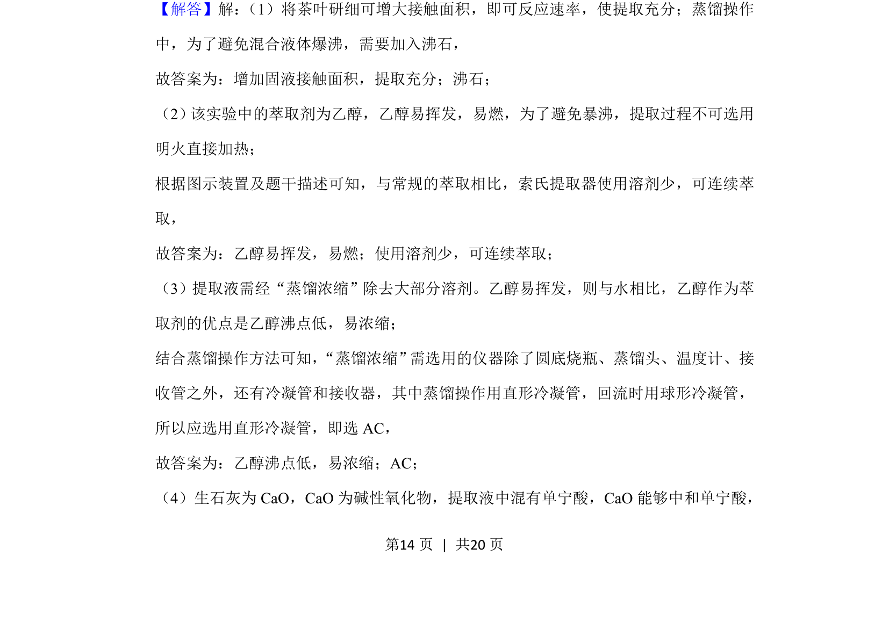
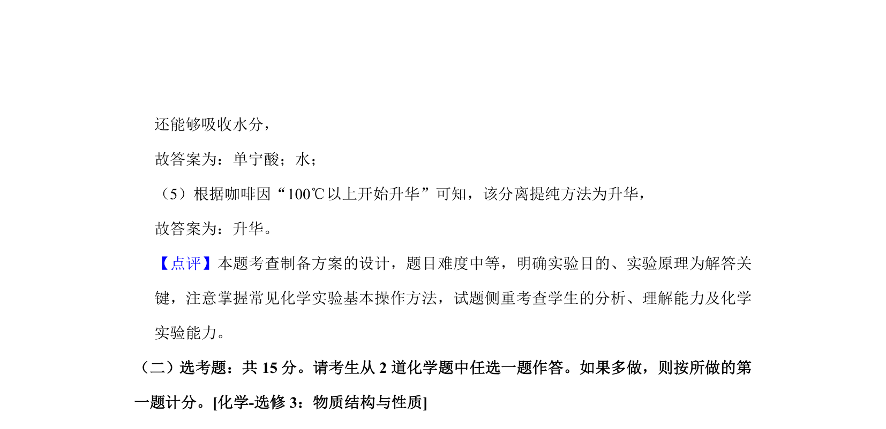

考点：实验操作 仪器选择 萃取原理


茶叶中咖啡因的提取实验操作、仪器选择及萃取原理


📄 原 PDF 第 13 页：
素材/真题/吉林/2008-2024·（吉林）化学高考真题/2019年高考化学试卷（新课标Ⅱ）（解析卷）.pdf
10． （15分）咖啡因是一种生物碱（易溶于水及乙醇，熔点234.5℃，100℃以上开始升华） ， 有兴奋大脑神经和利尿等作用。茶叶中含咖啡因约1%～5%、单宁酸（K a约为10 ﹣6，易 溶于水及乙醇）约3%～10%，还含有色素、纤维素等。实验室从茶叶中提取咖啡因的流 程如图所示。 索氏提取装置如图所示。实验时烧瓶中溶剂受热蒸发，蒸汽沿蒸汽导管2上升至球形冷 凝管，冷凝后滴入滤纸套筒1中，与茶叶末接触，进行萃取。萃取液液面达到虹吸管3 顶端时，经虹吸管3返回烧瓶，从而实现对茶叶末的连续萃取。回答下列问题： （1） 实验时需将茶叶研细，放入滤纸套筒1中，研细的目的是 增加固液接触面积，提 取充分 。圆底烧瓶中加入95%乙醇为溶剂，加热前还要加几粒 沸石 。 （2） 提取过程不可选用明火直接加热，原因是 乙醇易挥发，易燃 。与常规的萃取相 比，采用索氏提取器的优点是 使用溶剂少，可连续萃取 。 （3）提取液需经“蒸馏浓缩”除去大部分溶剂。与水相比，乙醇作为萃取剂的优点是 乙醇沸点低，易浓缩 。“蒸馏浓缩”需选用的仪器除了圆底烧瓶、蒸馏头、温度计、接 收管之外，还有 AC （填标号） 。